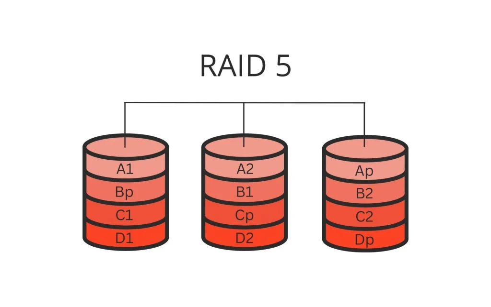
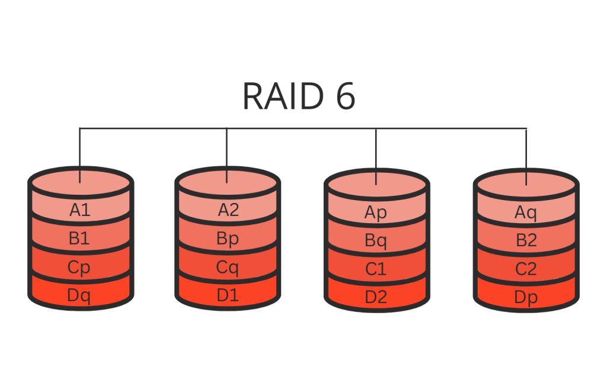
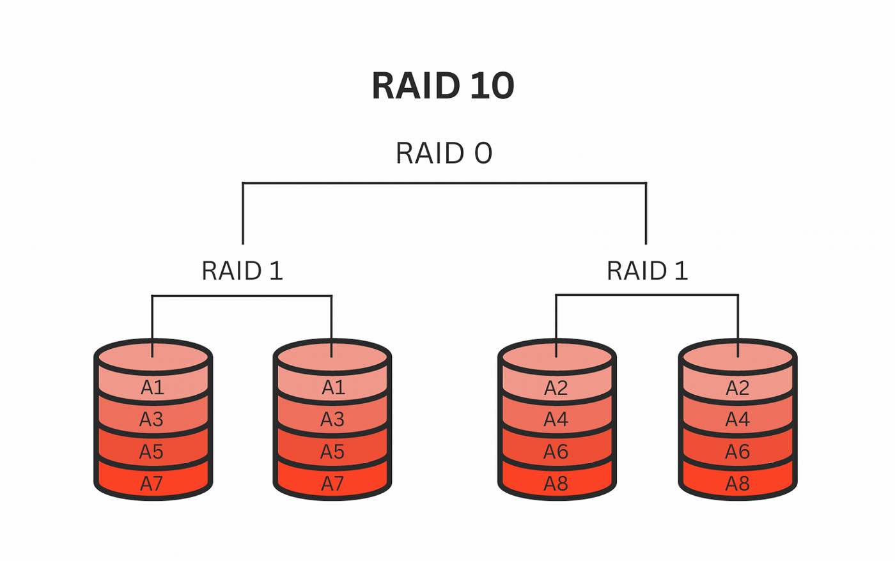
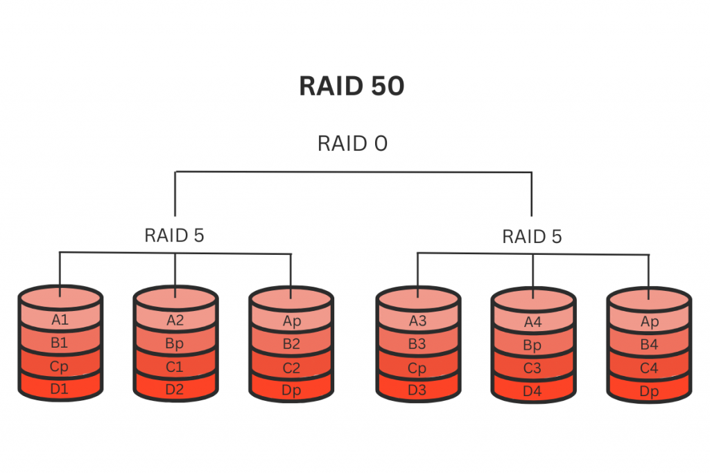
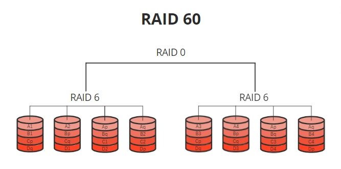

RAID 0

Què és: RAID 0 és una configuració que distribueix les dades entre dos o més discs.
Per a què serveix: Millora el rendiment en la lectura i escriptura de dades, però no proporciona redundància.
RAID 1

Què és: RAID 1 crea una còpia exacta de les dades en dos o més discs.
Per a què serveix: Proporciona redundància; si un disc falla, les dades es poden recuperar del altre.
RAID 5
Què és: RAID 5 distribueix les dades i la paritat entre tres o més discs.
Per a què serveix: Proporciona redundància i un bon rendiment, permetent la recuperació en cas de fallada d'un disc.
RAID 6
Què és: RAID 6 és similar a RAID 5, però amb una capa addicional de paritat.
Per a què serveix: Pot suportar la fallada de fins a dos discs sense perdre dades.
RAID 10
Què és: RAID 10 combina les tècniques de RAID 0 i RAID 1.
Per a què serveix: Ofereix tant redundància com rendiment elevat mitjançant la combinació de discs en miralls i distribució de dades.
RAID 50
Què és: RAID 50 combina les configuracions RAID 5 i RAID 0.
Per a què serveix: Ofereix tant rendiment com redundància, permetent la recuperació de dades en cas de fallada d'un disc en cada grup RAID 5.
RAID 60
Què és: RAID 60 combina les configuracions RAID 6 i RAID 0.
Per a què serveix: Proporciona alta disponibilitat i redundància, permetent la fallada de fins a dos discs en cada grup RAID 6 sense pèrdua de dades.